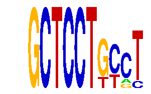

family_18 |
|---|
|  |
| Download PWM |
| Download instances (motifs) |
| Show motif distribution |
Query_ID | Query_Consensus | Subject_Name | Source_DB | Subject_ID | Length | Orientation | Offset | Divergence | Overlap | Subject_Consensus |
|---|
Sequence | Start_position (from start) | Start_position (from end) | Average conservation | Best conservation score | Instance_with_best_CS | Best_Z-score | Instance_with_best_ZS | Strand |
|---|---|---|---|---|---|---|---|---|
| chr2:35115003-35116003 | 479 | 489 | 0.007 | 0.015 | GCTCCTGYCY | 14.065376 | GCTCCTGYCY | 1 |
| chr10:79537530-79538530 | 73 | 83 | 0.0078 | 0.017 | GCTCCTKYCT | 12.710102 | GCTCCTKCMT | 1 |
| chr15:100446141-100447141 | 234 | 244 | 0.0108 | 0.038 | GCTCCTGYST | 15.913989 | GCTCCTGYST | 1 |
| chr4:107518583-107519583 | 294 | 304 | 0.9963 | 1 | GCTCCTGYST | 12.710102 | GCTCCTKCMT | 1 |
| chr5:115964921-115965921 | 454 | 464 | 0.0188 | 0.055 | GCTCCTKYCT | 12.710102 | GCTCCTKCMT | 1 |
| chr12:106251088-106252088 | 808 | 818 | 0.0244 | 0.073 | GCTCCTGYST | 14.065376 | GCTCCTGYCY | 1 |
| chr11:87982958-87983958 | 83 | 93 | 0.0567 | 0.115 | GCTCCTKYCT | 12.710102 | GCTCCTKCMT | 1 |
| chr17:65907523-65908523 | 903 | 913 | 0.4873 | 0.504 | GCTCCTGYST | 15.913989 | GCTCCTGYST | 1 |
| chr11:5797717-5798717 | 617 | 627 | 0.0012 | 0.004 | GCTCCTKCMT | 15.913989 | GCTCCTGYST | -1 |
| chr12:106251088-106252088 | 587 | 597 | 0 | 0 | GCTCCTKCMT | 12.710102 | GCTCCTKCMT | 1 |
| chr17:48571335-48572335 | 436 | 446 | 0.0063 | 0.023 | GCTCCTKYCT | 12.710102 | GCTCCTKCMT | -1 |
| chr4:137032204-137033204 | 167 | 177 | 0.9981 | 1 | GCTCCTKCMT | 14.065376 | GCTCCTKYCT | 1 |
| chr16:38362422-38363422 | 163 | 173 | 0.0005 | 0.004 | GCTCCTGYST | 15.913989 | GCTCCTGYST | 1 |
| chr15:103138701-103139701 | 105 | 115 | 0.0006 | 0.002 | GCTCCTGYCY | 14.065376 | GCTCCTGYCY | 1 |
| chr7:51729362-51730362 | 618 | 628 | 0.0362 | 0.047 | GCTCCTGYST | 12.710102 | GCTCCTKCMT | 1 |
| chr8:97884629-97885629 | 334 | 344 | 0.0145 | 0.039 | GCTCCTGYST | 12.710102 | GCTCCTKCMT | 1 |
| chr19:47829769-47830769 | 502 | 512 | 0.0128 | 0.02 | GCTCCTKCMT | 12.710102 | GCTCCTKCMT | 1 |
| chr11:120101153-120102153 | 463 | 473 | 0.502 | 0.845 | GCTCCTGYST | 12.710102 | GCTCCTKCMT | 1 |
| chr3:130602895-130603895 | 29 | 39 | 0.9987 | 1 | GCTCCTKYCT | 14.065376 | GCTCCTKYCT | 1 |